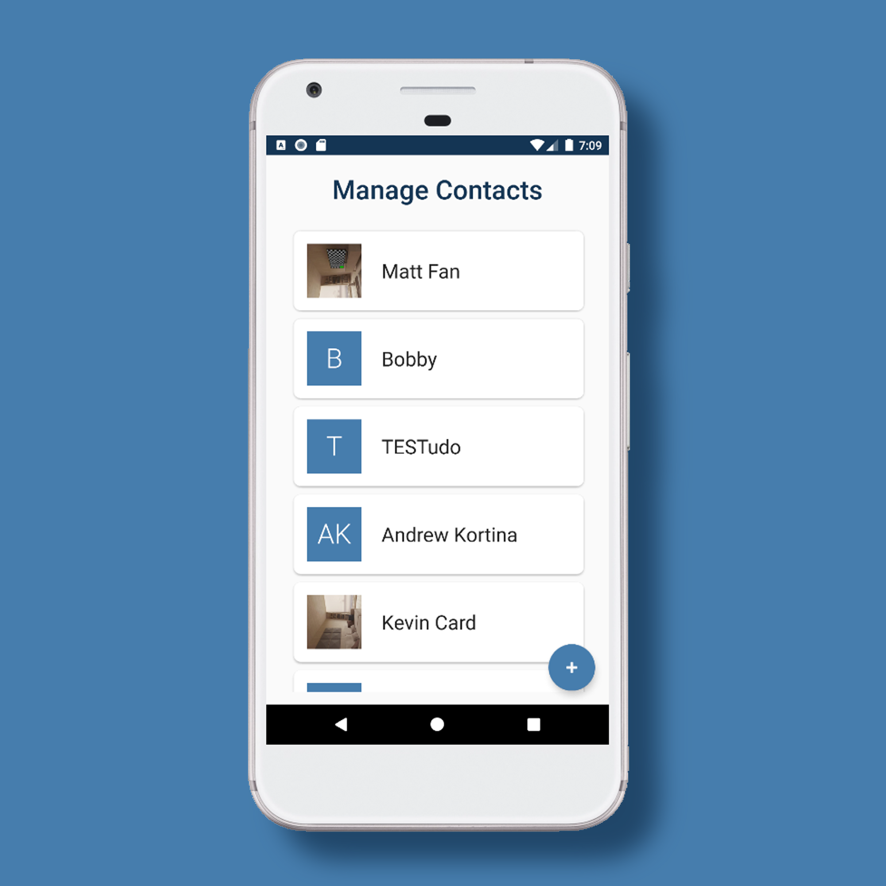

| Call Your Mother-2 | |
| External link to .apk | |
| DOWNLOAD | |
Call Your Mother is designed as an easy to use utility app to help you stay in touch with friends, family, and other important contacts.
Our app lets you choose which contacts you want to receive reminders for, and how frequently,
and passively tracks calling behavior outside of the app using android call logs to accurately send reminders to call a contact
after the chosen period has elapsed without calling them. |
|
|  | |
| VIDEO LINK | |
|
External libraries:
|
|